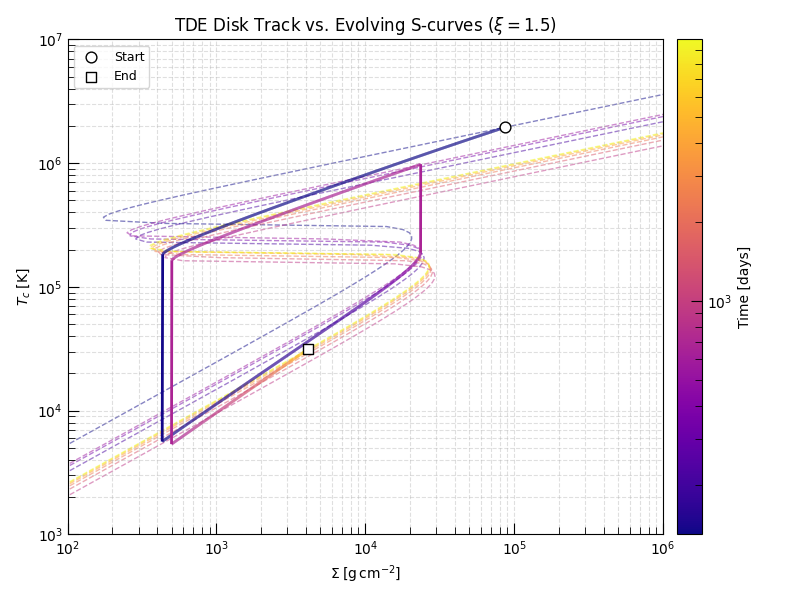

Note
Go to the end to download the full example code.
Disk Thermal Equilibrium: The S-curve#
At any instant the disk temperature is set by thermal equilibrium — the condition that viscous heating equals radiative plus advective cooling:
For fixed disk parameters \((\Sigma, \Omega)\) there is a unique temperature satisfying this balance. Sweeping over a range of surface densities traces the thermal equilibrium S-curve in \(\Sigma\)–\(T_c\) space.
Crucially, the S-curve itself evolves as the disk drains: because \(\Omega \propto R_D^{-3/2}\) and the heating and cooling rates both depend on \(\Omega\), a shrinking disk radius shifts the equilibrium locus. The one-zone integrator enforces thermal equilibrium at every timestep, so the disk’s \((\Sigma(t), T_c(t))\) trajectory follows the instantaneous S-curve as it moves.
Here we run a TDE disk simulation, then overlay a family of S-curves computed at ten snapshots of \(R_D(t)\) to show how the equilibrium locus migrates during the evolution.
Relevant API#
Setup#
import matplotlib.pyplot as plt
import numpy as np
from astropy import constants as const
from astropy import units as u
from matplotlib.collections import LineCollection
from matplotlib.colors import LogNorm
from triceratops.dynamics.accretion.one_zone import AdvectiveDisk, compute_advection_s_curve
from triceratops.utils.plot_utils import set_plot_style
set_plot_style()
TDE Parameters#
Solar-type star disrupted by a \(10^6\,M_\odot\) black hole. The fallback timescale and peak rate follow Rees (1988).
M_BH = 1.0e7 * const.M_sun
M_star = 1.0 * u.Msun
R_star = 1.0 * u.Rsun
alpha = 0.1
mu = 0.62
xi = 1.5
R_in = (6.0 * const.G * M_BH / const.c**2).to(u.cm)
R_T = (R_star * (M_BH / M_star) ** (1.0 / 3.0)).to(u.cm)
R_C = (2.0 * R_T).to(u.cm)
t_fb = ((np.pi / np.sqrt(2)) * np.sqrt(M_BH * R_star**3 / (const.G * M_star**2))).to(u.day)
M_fb_0 = ((1.0 / 5.0) * M_star / t_fb).to(u.Msun / u.yr)
print(f"t_fb = {t_fb:.2f}")
print(f"M_fb_0 = {M_fb_0:.2f}")
t_fb = 129.51 d
M_fb_0 = 0.56 solMass / yr
Run the TDE Disk Simulation#
disk = AdvectiveDisk(mu=mu, xi=xi, fallback=True)
ic = disk.generate_initial_conditions(M_BH=M_BH, M_D_0=M_star / 5.0, R_D_0=R_C)
run_params = {
"M_BH": M_BH,
"R_in": R_in,
"alpha": alpha,
"M_fb_0": M_fb_0,
"t_fb": t_fb,
"R_c": R_C,
"beta_fb": 5.0 / 3.0,
}
result = disk.solve(ic, run_params, t_span=(t_fb, 10000.0 * u.day), max_steps=2_000_000, epsilon=1e-3)
print(f"Solve: {result.n_steps:,} steps, t_end = {result.data['t'][-1].to(u.day):.1f}")
t_day = result.data["t"].to(u.day).value
Sigma_t = result.data["Sigma"].to(u.g / u.cm**2).value
T_c_t = result.data["T_c"].to(u.K).value
R_D_t = result.data["R_D"].to(u.cm).value
Solve: 5,177 steps, t_end = 9912.9 d
Compute S-curves at Ten Evolutionary Snapshots#
We sample ten times logarithmically across the simulation and compute the S-curve at the actual disk radius \(R_D(t)\) at each snapshot. The curves are color-coded by time using the same colormap as the evolutionary track, so colours match between the track and the equilibrium locus it is riding at that moment.
n_curves = 10
snap_times = np.geomspace(t_day[0], t_day[-1], n_curves)
norm = LogNorm(vmin=t_day[0], vmax=t_day[-1])
cmap = plt.get_cmap("plasma")
s_curves = []
for t_snap in snap_times:
idx = np.argmin(np.abs(t_day - t_snap))
R_D_snap = R_D_t[idx] * u.cm
T_eq, Sigma_eq = compute_advection_s_curve(
R_disk=R_D_snap,
M_BH=M_BH,
alpha=alpha,
xi=xi,
mu=mu,
T_min=1e3 * u.K,
T_max=1e8 * u.K,
T_grid_n=200,
sigma_min=1e1 * u.g / u.cm**2,
sigma_max=1e8 * u.g / u.cm**2,
)
s_curves.append((t_snap, T_eq, Sigma_eq))
0%| | 0/200 [00:00<?, ?it/s]
100%|██████████| 200/200 [00:00<00:00, 4037.49it/s]
0%| | 0/200 [00:00<?, ?it/s]
100%|██████████| 200/200 [00:00<00:00, 4094.14it/s]
0%| | 0/200 [00:00<?, ?it/s]
100%|██████████| 200/200 [00:00<00:00, 4055.50it/s]
0%| | 0/200 [00:00<?, ?it/s]
100%|██████████| 200/200 [00:00<00:00, 4079.57it/s]
0%| | 0/200 [00:00<?, ?it/s]
100%|██████████| 200/200 [00:00<00:00, 4177.28it/s]
0%| | 0/200 [00:00<?, ?it/s]
100%|██████████| 200/200 [00:00<00:00, 4173.40it/s]
0%| | 0/200 [00:00<?, ?it/s]
100%|██████████| 200/200 [00:00<00:00, 4182.24it/s]
0%| | 0/200 [00:00<?, ?it/s]
100%|██████████| 200/200 [00:00<00:00, 4180.20it/s]
0%| | 0/200 [00:00<?, ?it/s]
100%|██████████| 200/200 [00:00<00:00, 4149.61it/s]
0%| | 0/200 [00:00<?, ?it/s]
100%|██████████| 200/200 [00:00<00:00, 4141.97it/s]
Evolution Track vs. Evolving S-curves#
Each S-curve is drawn at the colour corresponding to its snapshot time. The disk track (thick line) slides along the instantaneous equilibrium locus as both the surface density and the S-curve itself evolve.
fig, ax = plt.subplots(figsize=(8, 6))
# S-curves — faint, coloured by time
for t_snap, T_eq, Sigma_eq in s_curves:
mask = np.isfinite(Sigma_eq.value)
color = cmap(norm(t_snap))
ax.loglog(
Sigma_eq[mask].to(u.g / u.cm**2).value,
T_eq[mask].to(u.K).value,
color=color,
lw=1.0,
alpha=0.5,
zorder=1,
ls="--",
)
# Evolutionary track, color-coded by time
points = np.array([Sigma_t, T_c_t]).T.reshape(-1, 1, 2)
segs = np.concatenate([points[:-1], points[1:]], axis=1)
lc = LineCollection(segs, cmap=cmap, norm=norm, lw=2.0, zorder=2)
lc.set_array(t_day[:-1])
ax.add_collection(lc)
cbar = fig.colorbar(lc, ax=ax, pad=0.02)
cbar.set_label("Time [days]", fontsize=10)
ax.scatter(Sigma_t[0], T_c_t[0], s=60, marker="o", color="white", edgecolors="k", zorder=3, label="Start")
ax.scatter(Sigma_t[-1], T_c_t[-1], s=60, marker="s", color="white", edgecolors="k", zorder=3, label="End")
ax.set_xscale("log")
ax.set_yscale("log")
ax.set_xlim(1e2, 1e6)
ax.set_ylim(1e3, 1e7)
ax.set_xlabel(r"$\Sigma\;[\mathrm{g\,cm^{-2}}]$")
ax.set_ylabel(r"$T_c\;[\mathrm{K}]$")
ax.set_title(rf"TDE Disk Track vs. Evolving S-curves ($\xi = {xi}$)")
ax.legend(fontsize=9, loc="upper left")
ax.grid(True, which="both", ls="--", alpha=0.4)
# sphinx_gallery_thumbnail_number = -1
plt.tight_layout()
plt.show()

Total running time of the script: (0 minutes 1.319 seconds)